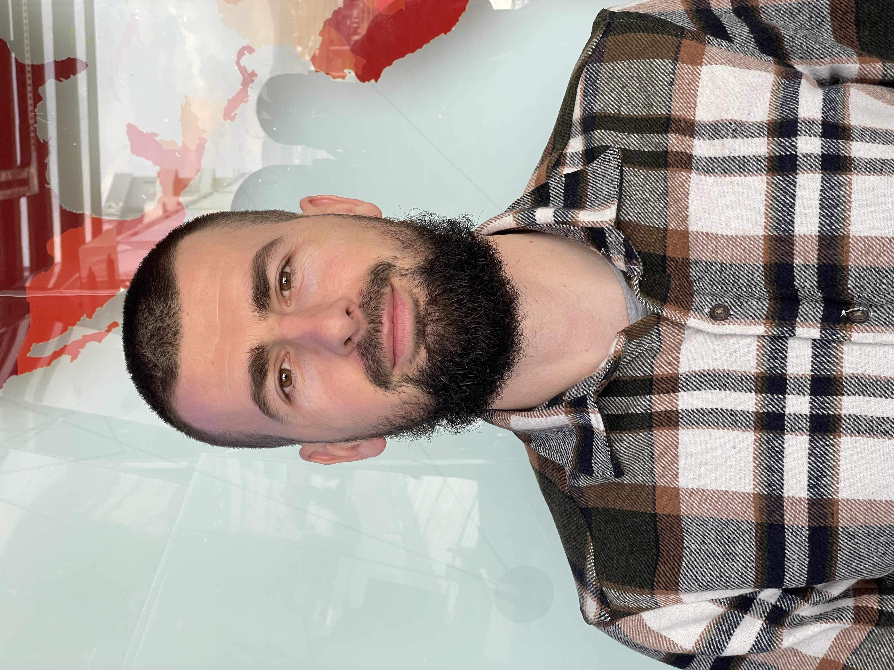

Who is Dorand Xhelili?
I am Dorand Xhelili, living in a medium-sized village near Gjilan. My passion for technology began in 2008/2009 when I was 16 years old. I attended my first course in IT Essentials, where I earned my first certificate. Since then, I've embarked on a journey in contemporary technologies and currently work as a Network Engineer Team Lead in a company in Gjilan, Kosovo. I'm also starting a new chapter in the field of Front-End Development.